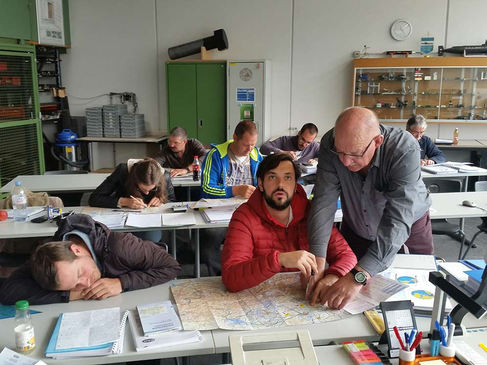
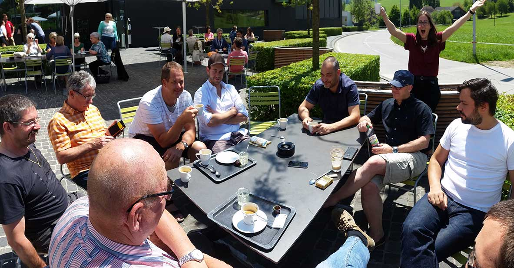
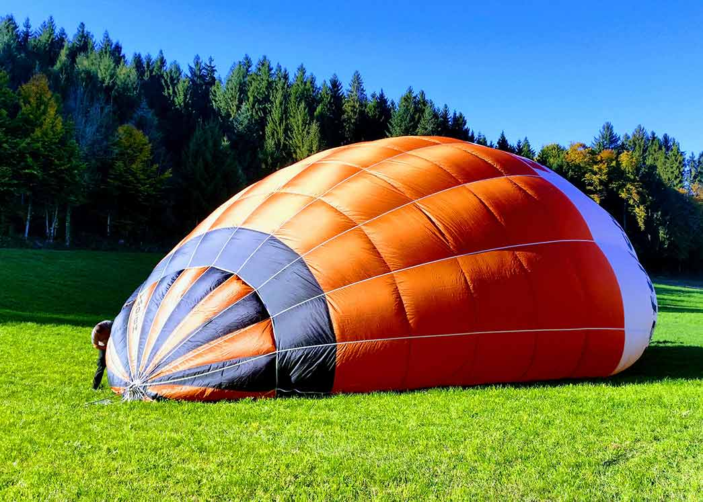

Blog > Rückblick Ausbildung zum Fahrlehrer
Hier ein paar Rückblicke auf die Fahrlehrerausbildung, die ich letztes Jahr begonnen habe:
 Theorieunterricht Navigation mit Kurt Boppart in Lenzburg am 06.05.2017. An zehn Samstagen haben ich mit angehenden Piloten die alle Fächer für die Theorieprüfung des Bundesamtes für Zivilluftfahrt BAZL repetiert. Zudem haben wir uns an Dienstagabenden in Lerngruppen getroffen und Probeprüfungen durchgearbeitet.Der Theoriekurs war für mich der anstrengendste Teil der Ausbildung. Ich konnte mich zwar noch an viele Inhalte vom Theoriekurs 2010, als ich selber Pilot wurde, erinnern, aber trotzdem war das Wissen nicht mehr ganz frisch. Zudem kann man nicht direkt an die Theorieprüfung gehen, sondern muss die Schulung durchlaufen. Ein sehr schöner Abschluss hatten wir dann allerdings mit dem Repetitionswochenende in Sursee wo ich auch eine Lektion unterrichten durfte:
 Kaffeepause beim Repetitionswochenende in Sursee am 26.05.2017. Die Stimmung war sichtlich gut und die Gruppe war fit für die Theorieprüfung. Zwar war es sonnig, doch es ging auch genug Bise, dass Ballonfahren an diesem Wochenende kein Thema war und wir alle entspannt sein konnten.Am 17. Juni 2017 fand die Prüfung im Keller des Flugplatzes Birrfeld statt. Ich bestand fast alle Fächer mit hohen Punktzahlen, doch im Fach 70 Betriebsverfahren fiel ich durch. Ich hatte einen schwachen Moment in dieser Prüfung, denn eigentlich gilt dieses Fach als das Einfachste. Zum Glück darf man einzelne Fächer wiederholen und so bestand ich dann auch im zweiten Anlauf, der dieses Mal in Bern Belp war, die Theorieprüfung.
Die Ausbildung zum Fahrlehrer erfordert neben dem Theoriekurs auch eine pädagogische Ausbildung, den sogenannten Teaching und Learning Kurs. Ich habe mich entschieden ihn mit der Flugschule NGFT zu machen. Das Besondere an NGFT ist, dass es ein Fernkurs ist der in einem virtuellen Klassenzimmer (Webseite mit Videokonferenz) stattfindet. Mit drei Helikoper Fluglehrer habe ich so über das Lernen und das Lehren gelernt und durfte in diesem Rahmen auch einige Vorträge üben.
Nach erfolgreichem Abschluss der Theorieprüfung und des Teaching und Learning Kurses wurde mir eine provisorische Fahrlehrerlizenz ausgestellt. Mit dieser Flight Instructor Restricted FI-R Lizenz darf ich nun Schulfahrten unter Aufsicht von Benj Senn durchführen. Aufsicht bedeutet, dass wir uns vor und nach der Schulfahrt absprechen, jedoch muss Benj nicht in den Korb kommen. Im Oktober konnte ich dann die ersten Schulfahrten machen:
 Aufrüsten des Ballons auf meiner zweiten Schulfahrt als Fahrlehrer am 14.10.2017. Mit der FI-R Lizenz kann ich nun selber unterrichten. Während dem Fahrlehrerpraktikum, das total 15 Flugstunden beinhaltet, bin ich dabei unter Aufsicht von Benj Senn.Im Moment sammle ich nun Erfahrung als Fahrlehrer unter Aufsicht bis ich mindesten 15 Stunden unterrichtet habe und danach werde ich eine Lizenz ohne Einschränkungen erhalten. Ich freue mich auf die anstehenden Schulfahrten :)